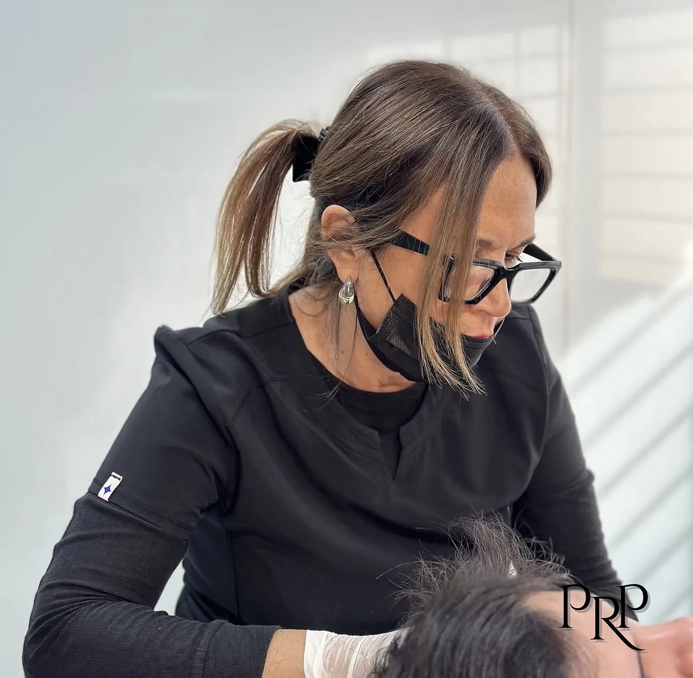

Labios
Perfilado, hidratación y volumen con enfoque natural y proporcional.
Consultar precio →Más de 10 años dedicados exclusivamente a la estética orofacial, con formación internacional y una filosofía centrada en resultados elegantes, equilibrados y personalizados.

Una estética que acompaña tu identidad.
La indicación final se define luego de una evaluación profesional. Consultá el valor actualizado directamente por WhatsApp.
Perfilado, hidratación y volumen con enfoque natural y proporcional.
Consultar precio →Tratamientos orientados a suavizar líneas de expresión preservando la expresión natural.
Consultar precio →Evaluación integral de proporciones, soporte y equilibrio facial.
Consultar precio →Opciones mínimamente invasivas para acompañar la definición del contorno facial.
Consultar precio →Reposición de volumen y armonización en zonas estratégicas del rostro.
Consultar precio →Evaluación personalizada para definir objetivos, prioridades y opciones.
Agendar consulta →Subí una selfie frontal. La simulación crea una propuesta visual Full Face para explorar armonía, soporte y equilibrio facial.
Foto frontal, buena luz, rostro despejado y expresión neutra.
Nacida en Cutral Có, Neuquén, la Dra. Patricia Romero Pfaff es odontóloga y construyó su trayectoria a partir de una formación académica sólida, actualización constante y una profunda dedicación a la estética y armonización orofacial.
Desde hace más de 10 años se dedica exclusivamente a la estética y armonización orofacial. Su formación incluye cursos y perfeccionamientos en distintos lugares del mundo junto a reconocidos referentes del área.
Actualmente participa como dictante universitaria y también en Apolonia Full Face, combinando práctica, docencia y actualización permanente.
“Amo lo que hago. Cada rostro merece una mirada propia, precisa y respetuosa de su identidad.”
Información general. La evaluación personalizada es la que permite determinar qué opciones son apropiadas para cada persona.
Es un enfoque que evalúa proporciones, volumen, expresión y contorno facial buscando mayor equilibrio y preservando la identidad de cada rostro.
No. Es una visualización orientativa para conversar sobre objetivos estéticos. No predice ni garantiza un resultado.
Se define en consulta, luego de evaluar tus objetivos, antecedentes y características individuales.
La filosofía de PRP prioriza cambios armónicos, progresivos y personalizados antes que transformaciones exageradas.
Sí. Podés escribir por WhatsApp indicando el tratamiento que te interesa para recibir información actualizada.
PRP se encuentra en Bernardo O'Higgins 5435, Córdoba, Argentina. La atención es únicamente con cita previa.